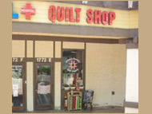

Address
Cotton and Chocolate1724 Avenida de los Arboles #E
Thousand Oaks, CA 91362
92078
Telephone
(805)-241-0061Hours
Mon - Thu: 10am-6pmFri: & Sat: 10am - 5pm
Sun: 12pm - 4pm
Website
www.cottonandchocolate.com Cotton & Chocolate Quilt Company
We are a full-service quilt shop offering the best in quality cotton fabrics, featuring many exciting fabric lines to satisfy a variety of tastes. We carry a large selection of Moda fabrics, reproductions, batiks and flannels. Browse our many books, patterns, and notions. Check out our hard-to-resist kits to get your project started. We carry a large selection of kits and supplies for making Grandmother's Flower Garden quilts and table runners. Also, we are very proud of our exclusive quilt patterns featuring local quilt artists.
Cotton & Chocolate Quilt Company is proud to be a part of the continuing legacy that was originally known as the Quilt Inn and Mary's Quilt Inn. Re-opened as Cotton & Chocolate Quilt Company in August 2004, we continue to be blessed with the talents of many instructors that have been a part of the shop for many years. The variety of quilt classes offered continues to be amazingly creative and represents a wide variety of quilting skills and tastes. Beginner or experienced quilters are sure to find something fun and exciting. Classes are a great way to learn a new skill, and are also a wonderful opportunity to be surrounded by creativity and inspiration while meeting others who share in your obsession.
What's in a name? Well, the "cotton" part is pretty obvious to us crazy about quilting, and the "chocolate" is...well, should be obvious also! The fun of sitting in the shop with a group of quilting buddies, checking out the latest fabrics, sharing stories and sampling favorite chocolate goodies just can't be beat! As can be seen in our logo, a chocolate "kiss" is always available at our counter for that quick fix.
Map & Directions
View Larger Map
- Home
- Prize Winners
- Webmaster
- © Southern California Quilters Run 2016-17